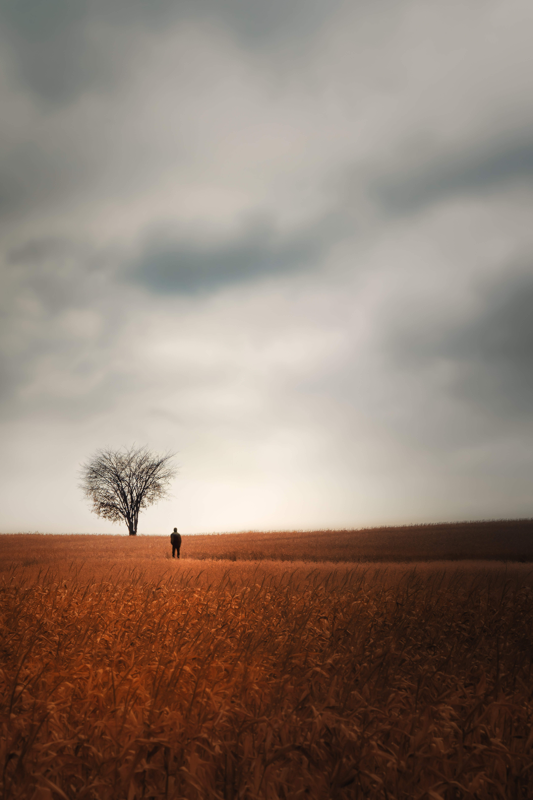
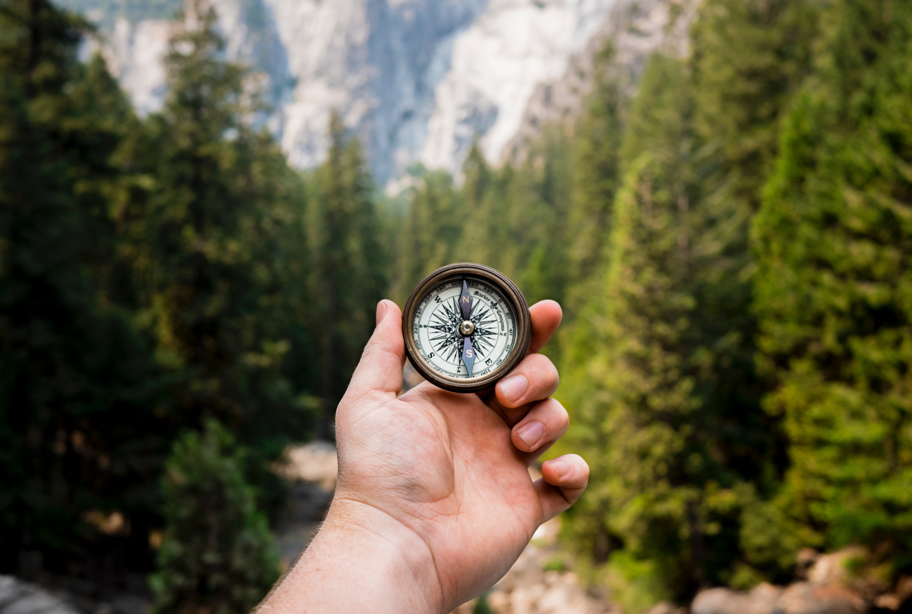

Its official, after 2 years of unprecedented times, we are back to precedented times (almost). We are once again commuting to the office on a regular basis, flying and dining hassle-free, making social plans and interacting IRL without the overarching fear of droplets. If this were an apocalyptic movie, we’d be the lucky few who made it to the “happily ever after”. Sure, life is moving on; If it doesn’t feel like a happy ending, recall when you were self-isolating, consuming nothing but horror images and breaking news, craving hugs and better days. Well, the better days are here, and are starting to look a lot more “normal”. Question is, what does normal even mean? I don’t know about you but I’m pretty sure the pandemic has changed you in one way or another. Knowing what I know now I can’t just spring back to the old normal like we didn’t just suffer through major trauma. In many ways, I find it hard to relate to the person I was February 2020. Between then and now, I lost a parent, lost friends, gained friends, gained muscle, lost weight, made career moves, financial moves and the list goes on. We may be bouncing back on a global scale but on a personal level this “new normal” has never been normal. These changes came with a good deal of mental and emotional growth and I’d like to share some lessons I picked up along the way.
- Time is finite.

Assuming life expectancy of 80, subtract 20 years to get to maturity, we are left with just 60 years of our own volition, 2 of which have been stolen by the virus. That translates to about 60 summers, 3000 Sundays and 20,000 dinners for the optimistic scenario that we’ll even make it 80. That is not enough dinners in my opinion. With each tick of the clock, the counter goes down and there is no reset. It’d be wise to invest it in whatever brings you joy, happiness and/or fulfillment. We owe it to ourselves and the ones who didn’t get the luxury of looking back; we owe it to the lists and vows we made for better days. Know your priorities and purposefully make time for them. I for one derive great joy from being active, productive and helpful and I optimize my time accordingly. What are your priorities? If you find it hard to come up with a list, stick around for my next lesson …
- Explore.
Although it is efficient to stick to what already works, we miss out on a lot of opportunities we don’t take. Read that book that isn’t your usual genre, try a new sport, try a new cuisine, try a new hobby, you can always let it go if it doesn’t spark joy. This is something I remind myself everytime I’m hesitant to try something new. Biking and trail running are two things I tried during the plague and they have brought me so much joy. There’s always a chance something new will stick and if something sticks, it’d be wise to commit.
- Commit.
We spend a significant portion of our lives searching for the perfect routine, partner, community, workplace and so forth. The perfect anything doesn’t exist but when you find anything remotely close to it, commit because like I said, time is finite.
- Embrace boredom and solitude.

Sure it was hard to deal with the lack of background noise during the plague but don’t you appreciate the clarity of mind it left you with? For a change, we are talking about climate change, racism, careers, work life balance and all that good stuff. Introvert or otherwise I think we can all agree that some good came out of it. As the noise starts humming again, it might require some effort to get that solitude but do it anyway. Carve out alone time on a daily, weekly or whatever cadence works for you; don’t wait for the next plaque to tap into your deep faculties.
- Embrace your people.
I said before and I will say it again, time is finite; if your people are a priority, carve out quality time with them when you still have a chance. Life gets in the way but don’t loose sight of what’s important.
- Take care of your body.

A healthy body makes pays dividends on quality of life. We’ve heard it before “An apple a day keep the doctor away”, “Good things come to those who sweat” and so forth. It shouldn’t take a global pandemic to work on your immunity because as it turns out movement is good for the mind and soul too. However you choose to get your endorphins, make it sustainable and fun.
- There is value in doing hard things.
We do a million things in our lifetimes but its the hard ones that we talk about and remember the most. We are most alive when we are growing and that comes from challenging ourselves, as unpleasant as it feels. As I’ve watched myself go from casual runner to ultra runner, from extremely shy to less shy; I’ve learnt just how elastic we can be. There is something extremely magical and rewarding about getting better every day, however marginal.
- There is no right time to die.
Many of us picture ourselves dying at old age when we have our affairs in order; its why we are so suprised when death doesn’t follow the script. Deep within, we know that it can happen at any time and there’s no turning back but we choose to forget for practical reasons. We need this reminder from time to time, lest we fall prey to meaningless lives. Let this fact guide your choices and priorities.

Thanks for making it all the way here. If I could condense into a few words, the would be, “Be intentional, we only get one fragile life”. I hope you find these lessons valuable or at least interesting. I hope they get you thinking about how the pandemic changed you and I hope you came out it stronger.